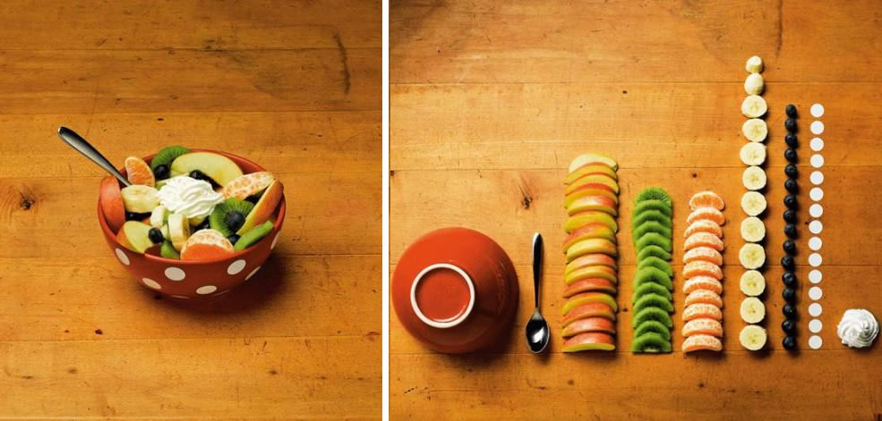
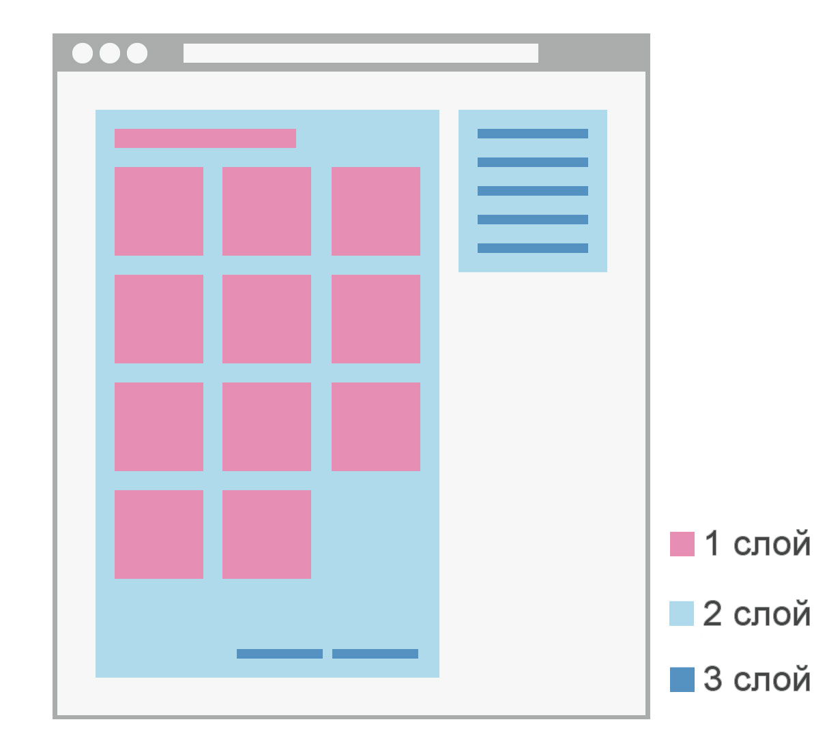
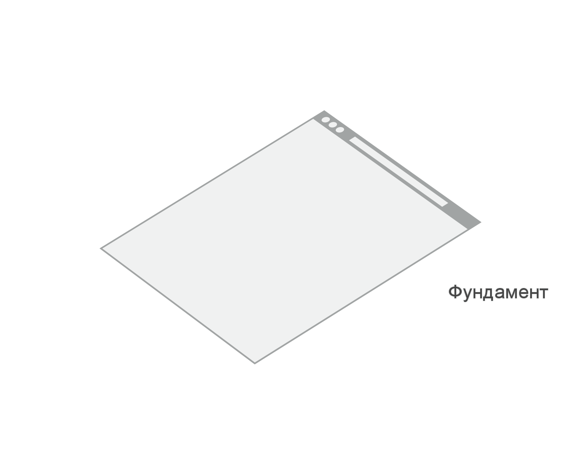
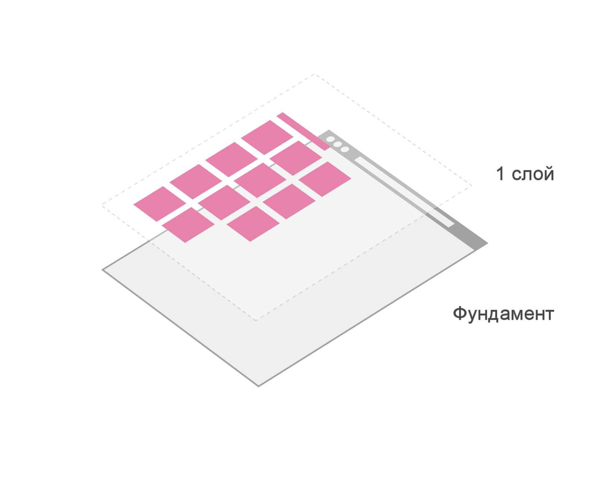
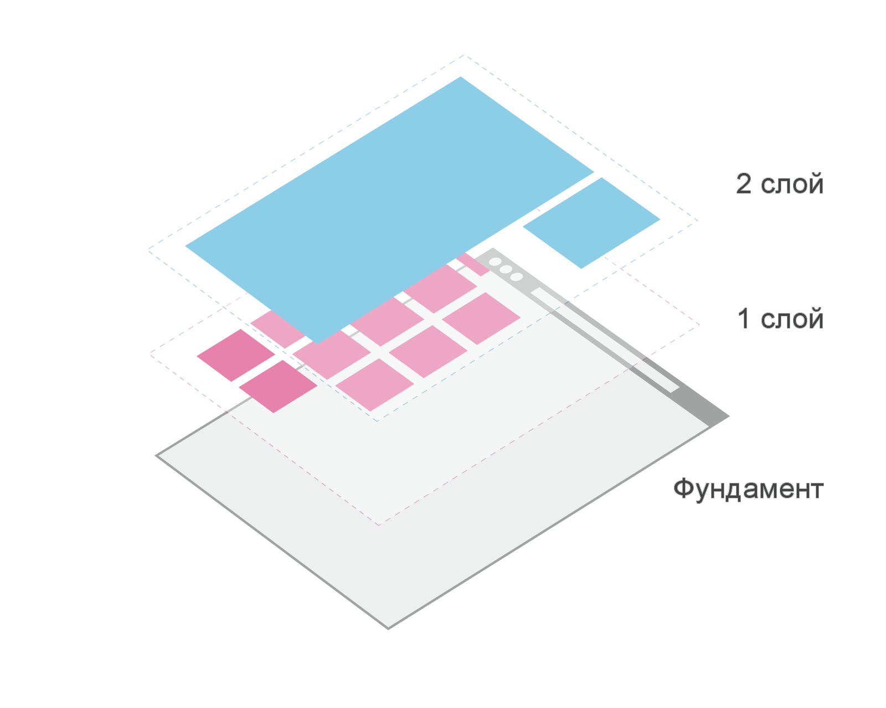
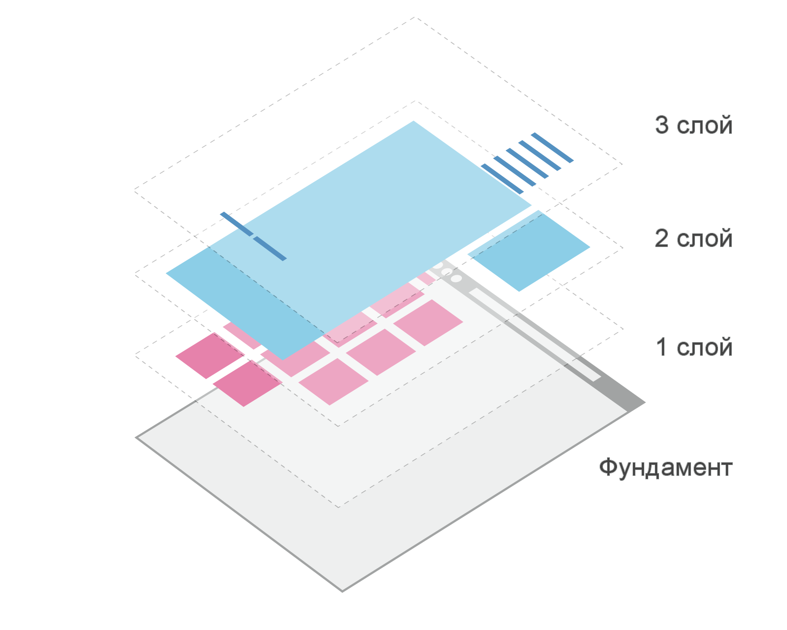
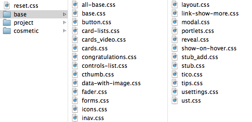

#common_css{display:none}body{background:#fff;color:#000;margin:0;padding:0;direction:ltr;font-family:tahoma,arial,verdana,sans-serif,Lucida Sans;font-size:11px;font-weight:normal}body.font_medium{font-size:12px;font-family:Lucida Grande,Arial,tahoma,verdana,sans-serif}body.nofixed{width:100%;overflow:hidden}body.nofixed #page_wrap{position:relative;height:100%;width:100%;overflow:auto}.fixed{position:fixed}body.nofixed .fixed,body.mobfixed .fixed{position:absolute}body.firefox #page_wrap{position:relative;width:100%;overflow:hidden}.table td{vertical-align:top;text-align:left}.scroll_fix_wrap{text-align:left;direction:ltr}a{color:#2b587a;text-decoration:none;cursor:pointer}a:hover{text-decoration:underline}img{border:0}form{margin:0;padding:0}small{font-size:10px}.font_medium small{font-size:11px}textarea.ashelper{overflow:hidden}#fmenu{position:absolute;right:0;top:0;margin-top:2px;padding:5px 0;background:#FFF}.fmenu_item,.fmenu_cont{overflow:hidden;display:inline-block;*display:inline;*zoom:1}.fmenu_item{font-size:10px;clear:both;margin:4px 1px;line-height:11px;padding:4px;font-weight:bold;color:#45688e;opacity:.5;filter:alpha(opacity=50);-webkit-border-radius:2px;-khtml-border-radius:2px;-moz-border-radius:2px;border-radius:2px;-webkit-transition:opacity 100ms linear;-moz-transition:opacity 100ms linear;-o-transition...#common_css{display:none}body{background:#fff;color:#000;margin:0;padding:0;direction:ltr;font-family:tahoma,arial,verdana,sans-serif,Lucida Sans;font-size:11px;font-weight:normal}body.font_medium{font-size:12px;font-family:Lucida Grande,Arial,tahoma,verdana,sans-serif}body.nofixed{width:100%;overflow:hidden}body.nofixed #page_wrap{position:relative;height:100%;width:100%;overflow:auto}.fixed{position:fixed}body.nofixed .fixed,body.mobfixed .fixed{position:absolute}body.firefox #page_wrap{position:relative;width:100%;overflow:hidden}.table td{vertical-align:top;text-align:left}.scroll_fix_wrap{text-align:left;direction:ltr}a{color:#2b587a;text-decoration:none;cursor:pointer}a:hover{text-decoration:underline}img{border:0}form{margin:0;padding:0}small{font-size:10px}.font_medium small{font-size:11px}textarea.ashelper{overflow:hidden}#fmenu{position:absolute;right:0;top:0;margin-top:2px;padding:5px 0;background:#FFF}.fmenu_item,.fmenu_cont{overflow:hidden;display:inline-block;*display:inline;*zoom:1}.fmenu_item{font-size:10px;clear:both;margin:4px 1px;line-height:11px;padding:4px;font-weight:bold;color:#45688e;opacity:.5;filter:alpha(opacity=50);-webkit-border-radius:2px;-khtml-border-radius:2px;-moz-border-radius:2px;border-radius:2px;-webkit-transition:opacity 100ms linear;-moz-transition:opacity 100ms linear;-o-transition...





/* Toolbar
--------------------------------------------------------------------- */
.toolbar {...}
.toolbar_logo {...}
/* Toolbar dropdown menu
-------------------------------------------------- */
.toolbar_dropdown {...}
.toolbar_dropdown .u-menu {...}
/* /Toolbar dropdown menu */
/* /Toolbar
--------------------------------------------------------------------- *//* Toolbar
--------------------------------------------------------------------- */
...
/* Toolbar dropdown menu
-------------------------------------------------- */
.toolbar_dropdown {...}
.ie8 .toolbar_dropdown {...}
.toolbar_dropdown .u-menu {...}
@media all and (...) {
.toolbar_dropdown .u-menu {...}
}
/* /Toolbar dropdown menu */
/* /Toolbar
--------------------------------------------------------------------- */<header class="toolbar">
<a href="/" class="toolbar_logo">Logo</a>
<nav class="toolbar_dropdown">
<ul class="toolbar_dropdown_ul">
<li class="toolbar_dropdown_li">
<li class="toolbar_dropdown_li toolbar_dropdown_li__active">
<menu class="umenu">
<li class="umenu_i">
<li class="umenu_i umenu_i__active">
<li class="umenu_i umenu_i__special"> i - item
tx - text
it - input text
is - input submit
itx - textarea
ir - input radio
ic - input checkbox
ico - icon
t - title
f - footer
h - header
с - card
cl - clear
col - column
cnt - content
img - image
a - link
ac - action
usr - user
e - errorПортальный фреймворк
например:Изолированные модули, составные части страницы
например:Простые, мало влияющие стили
например:
<form class="form">
<div class="info-block">Заполните поля</div>
<input type="text" class="input-text">
<a href="#">Помощь</a>
<fieldset class="new-p-module">
<form class="new-p-module_form form">
<div class="new-p-module_tip info-block">Заполните поля</div>
<input type="text" class="new-p-module_input-text input-text">
<a href="#">Помощь</a>/
#